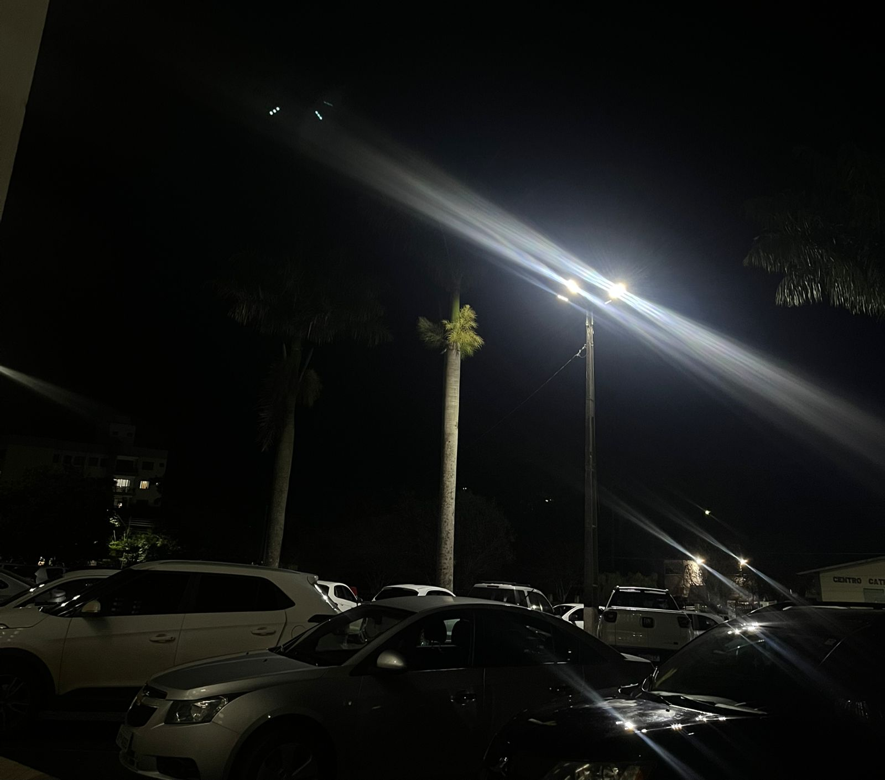

<!DOCTYPE html>
<html lang="en">
<head>
    <meta charset="UTF-8">
    <meta name="viewport" content="width=device-width, initial-scale=1.0">
    <title>Document</title>
    <link href="https://cdn.jsdelivr.net/npm/bootstrap@5.3.5/dist/css/bootstrap.min.css" rel="stylesheet"
        integrity="sha384-SgOJa3DmI69IUzQ2PVdRZhwQ+dy64/BUtbMJw1MZ8t5HZApcHrRKUc4W0kG879m7" crossorigin="anonymous">
        <link rel="stylesheet" href="energia.css">
</head>
<body>
    
</body> <!--Apresentação do tema-->
<section class="cabecalho">
    <h1>AGRINHO 2025</h1>
    <h3>Festejando Conexão Campo Cidade</h3>
</section>

<!--cabeçalho do site-->
<nav class="navbar navbar-expand-lg bg-dark">
    <div class="container-fluid ">
        <button class="navbar-toggler" type="button" data-bs-toggle="collapse" data-bs-target="#navbarNav"
            aria-controls="navbarNav" aria-expanded="false" aria-label="Toggle navigation">
            <span class="navbar-toggler-icon"></span>
        </button>
        <div class="collapse navbar-collapse justify-content-center" id="navbarNav">
            <ul class="navbar-nav">
                <li class="nav-item">
                    <a class="nav-link active text-white" aria-current="page" href="index.html">Página Inicial |</a>
                </li>
                <li class="nav-item">
                    <a class="nav-link text-white" href="energia.html">Energia Rural |</a>
                </li>
                <li class="nav-item">
                    <a class="nav-link text-white" href="agua.html">Acessibilidade a Água |</a>
                </li>
                <li class="nav-item">
                    <a class="nav-link text-white" href="producao.html">Produção</a>
                </li>
            </ul>
        </div>
    </div>
</nav>

</html>
<section class="hero">
    <h1>Energia para o Progresso: Campo e Cidade Conectados</h1>
    <p>Explore como a energia elétrica transforma vidas, impulsiona o desenvolvimento local, amplia oportunidades de trabalho, fortalece a educação e aproxima realidades entre o campo e a cidade, promovendo inclusão, bem-estar e progresso para todas as comunidades.</p>
  </section>
<section id="urbana" class="section">
    <h2>Energia nas Cidades</h2>
    <p>Nas áreas urbanas, o desafio está em garantir acesso sustentável e reduzir desperdícios. A urbanização demanda energia limpa e eficiente.</p>
    <div class="grid">
      <div class="card">
        
        <h3>Alta Demanda</h3>
        <p>Crescimento populacional e industrial aumentam a exigência por fontes renováveis.</p>
      </div>
      <div class="card">
        
        <h3>Infraestrutura</h3>
        <p>Rede moderna e automatizada para maior eficiência e segurança energética.</p>
      </div>
    </div>
  </section>
  <section id="rural" class="section">
    <h2>Energia no Meio Rural</h2>
    <p>Eletrificação rural vai além da iluminação: possibilita produção agroindustrial, conservação de alimentos, educação e saúde com qualidade.
       
         O que é energia rural?

         É a energia elétrica ou de outras fontes (como solar, eólica ou biomassa) utilizada em áreas do campo para atender: Residências rurais, atividades agropecuárias, sistemas de irrigação, processamento de alimentos, educação e saúde
    </p>
  
  </section>

  

  <section id="conexao" class="section">
    <h2>Campo e Cidade: Uma Rede Interligada</h2>
    <p>O campo pode gerar energia limpa (eólica, solar, biomassa) para abastecer centros urbanos, enquanto a cidade fornece tecnologia e capacitação para o campo.</p>
    
  </section>

  <section id="inovacoes" class="section">
    <h2>Inovações e Futuro</h2>
    <div class="grid">
      <div class="card">
        
        <h4>Microgeração</h4>
        <p>Residências e fazendas gerando sua própria energia com retorno à rede.</p>
      </div>
      <div class="card">
        
        <h4>Redes Inteligentes</h4>
        <p>Automação e dados integrados para otimizar distribuição e consumo.</p>
      </div>
      
    </div>
  </section>

  <section class="section">
    <h2>Depoimentos de Transformação</h2>
    <div class="grid">
      <div class="card">
        <p>“Com energia, abrimos um ateliê sustentável na zona rural.” – Marta, artesã rural.</p>
      </div>
      <div class="card">
        <p>“O painel solar reduziu 70% da nossa conta de luz urbana.” – Felipe, morador de periferia.</p>
      </div>
    </div>
  </section>

  

   </div>
    <div class="footer ">
        <p>Todos os direitos reservados para agrinho 2025 - Festejando a conexão campo cidade.</p>
    </div>

    <script src="https://cdn.jsdelivr.net/npm/bootstrap@5.3.5/dist/js/bootstrap.bundle.min.js"
        integrity="sha384-k6d4wzSIapyDyv1kpU366/PK5hCdSbCRGRCMv+eplOQJWyd1fbcAu9OCUj5zNLiq"
        crossorigin="anonymous"></script>
</body>

</html>


